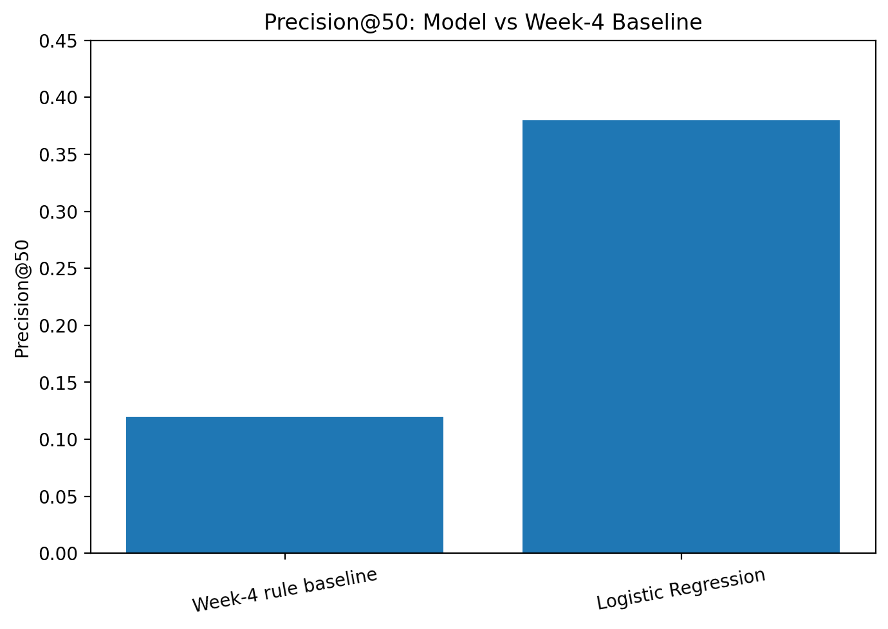

1. Title + Abstract
This study asks whether a simple machine-learning ranking model can help prioritize content items for review based on signals available before a future performance period.
The analysis uses 158,549 content-item observations built from public-safe March 2026 search and engagement features, with April 2026 organic clicks used to define the future outcome.
A Logistic Regression model using five search and engagement features was evaluated with a client-grouped train/test split so that clients did not overlap between training and testing.
On the held-out test split, the model achieved 0.3800 Precision@50, compared with 0.1200 for the Week-4 rule baseline, while the test positive rate was 0.1641.
The result is best interpreted as directional decision-support evidence for prioritizing human content review, rather than evidence that the model or a content refresh causes future traffic growth.
2. Introduction / Problem Statement
Content teams often have more pages available for review than they can realistically inspect at the same time. The practical problem is therefore not simply identifying whether content performance changes, but deciding which items should receive attention first.
A rule-based approach can provide a simple starting point, but a fixed rule may not use several available signals together. This study tests whether a lightweight machine-learning ranking approach can provide a more useful prioritization signal.
The decision supported by this analysis is: which content items should enter the review queue first?
The study does not attempt to automate content decisions. Instead, the model is treated as a ranking layer that can narrow a large review queue before human evaluation.
3. Data
Source and time window
This study uses the public-safe FlyRank internship warehouse release available for the modeling work.
March 2026 provides the decision-time features. April 2026 provides the future organic-click outcome used to construct the evaluation label.
The March data is aggregated at the content-item level using hashed client and content identifiers. The modeling features include Google Search Console clicks, impressions, average position, GA4 sessions, and scroll events.
Label definition
April clicks are aggregated for the same content items and joined to the March feature table. An item receives a positive label when its April organic clicks are greater than its March organic clicks.
Inclusion and exclusion
Records with available Google Search Console data were included in the monthly aggregations. The March and April tables were then joined so that the modeling dataset contains content items observed in both periods.
No client names, content URLs, private search queries, or other identifying business information are used in the public-facing analysis. Hashed identifiers are used only internally for grouped validation and are not treated as meaningful business features.
GA4 sessions and scroll events were unavailable for 44,696 observations each. These missing values were retained and handled in the modeling pipeline rather than silently treating missingness as observed activity.
4. Methodology
Features
The model uses five March 2026 features:
- Google Search Console clicks
- Google Search Console impressions
- Google Search Console average position
- GA4 sessions
- Scroll events
Model
Logistic Regression was used as a simple and interpretable ranking model. The model produces a probability score that is used to order content items for review.
Baseline
The model was compared against the Week-4 rule-based baseline. Both approaches were evaluated using Precision@50 on the same held-out test split.
Validation design
Validation was grouped by client rather than performed as a random row-level split. The training set contains 36 clients and the test set contains 10 clients, with zero client overlap.
| Validation property | Value |
|---|---|
| Train rows | 137,445 |
| Test rows | 21,104 |
| Train clients | 36 |
| Test clients | 10 |
| Client overlap | 0 |
Leakage checks
Future April clicks are used only to construct the label and are not included among the March decision-time features. Client grouping was also checked explicitly to ensure zero overlap between training and testing.
Earlier analysis also demonstrated why validation design matters: random row-level validation can produce an overly optimistic estimate when related observations from the same client appear on both sides of the split. The grouped design is therefore used for the reported result.
5. Results
The headline comparison is Precision@50 on the same held-out grouped test split. The model and baseline were evaluated against a test set with a positive rate of 0.1641.
| Method | Precision@50 |
|---|---|
| Week-4 rule baseline | 0.1200 |
| Logistic Regression | 0.3800 |

Figure 1. Precision@50 on the same held-out grouped test split.
The model's Precision@50 was 0.3800 versus 0.1200 for the baseline, meaning the model's top-50 queue contained a larger share of positive outcomes in this test evaluation.
6. Limitations & Honest Framing
The study is designed for prioritization and decision support, not causal inference.
- Association is not causation. A higher model score does not prove that changing a content item will increase organic clicks.
- Evaluation is time-specific. The reported result is based on the available March-to-April evaluation window and may not generalize to other periods.
- Client generalization is limited. The grouped validation prevents client overlap, but the test set still represents a finite set of observed clients.
- Feature availability varies. GA4 sessions and scroll events are missing for 44,696 modeling rows, which limits the information available for those observations.
- Model simplicity is intentional. Logistic Regression provides a useful baseline model for this study, but more complex models could behave differently and require their own validation.
Therefore, the strongest supported statement is that the evaluated Logistic Regression model provided better top-50 ranking precision than the Week-4 rule baseline on this held-out split. The result should be treated as measured, directional evidence for prioritization.
7. Ranked Recommendations
- Prioritize the model's top-ranked items for review. Start with the highest-ranked content items rather than reviewing a large inventory in arbitrary order.
- Review search visibility and positioning signals. Inspect content with meaningful search visibility and room for improvement before deciding whether a refresh is appropriate.
- Use engagement signals as supporting evidence. Where available, GA4 sessions and scroll events can provide additional context, but they should not be treated as automatic refresh triggers.
- Keep human review in the loop. Review search intent, content quality, freshness, relevance, and context before publishing any changes.
- Measure outcomes after intervention. Track post-refresh performance separately and use future observations to evaluate whether the prioritization strategy remains useful.
8. Reproducibility
The analysis is documented in the project repository and the capstone notebook. The notebook contains the data preparation, validation, modeling, evaluation checks, ranked recommendations, and artifacts underlying this page.
Reproduction notes
- March 2026 is used for decision-time features.
- April 2026 is used for the future outcome label.
- The reported split is grouped by client.
- There are 36 training clients and 10 test clients.
- Client overlap is zero.
- Model performance is evaluated using Precision@50.
The public-facing page intentionally excludes client names, content URLs, private queries, and identifying business information.
9. Acknowledgments & Data Credit
Built on the FlyRank ML Internship dataset.
Data source: FlyRank
This project was completed as part of the FlyRank Machine Learning Internship track. The analysis is presented as a public-safe research and decision-support artifact.